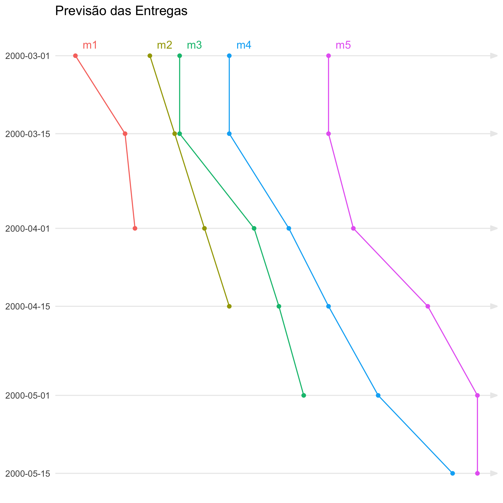
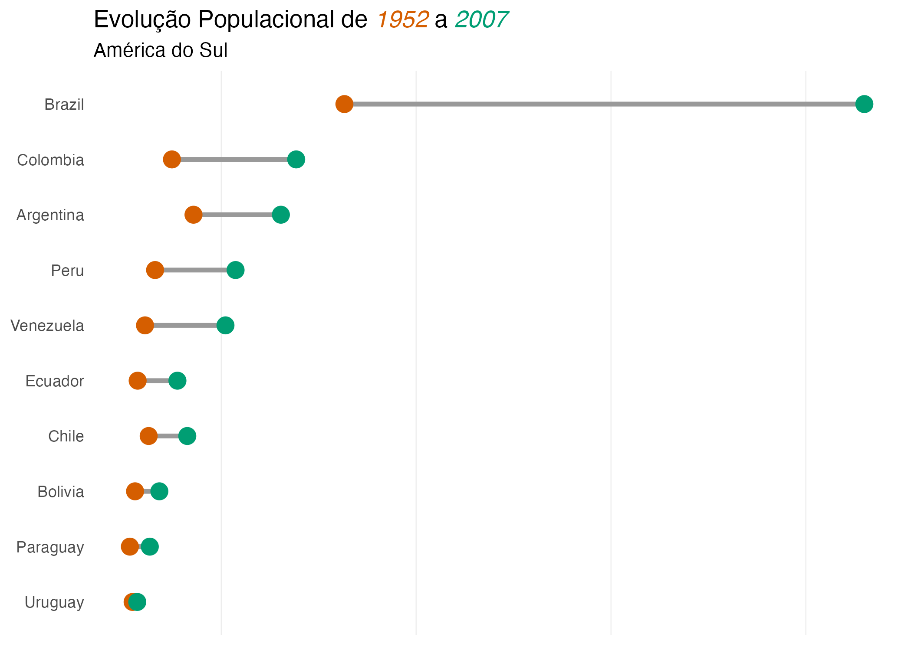
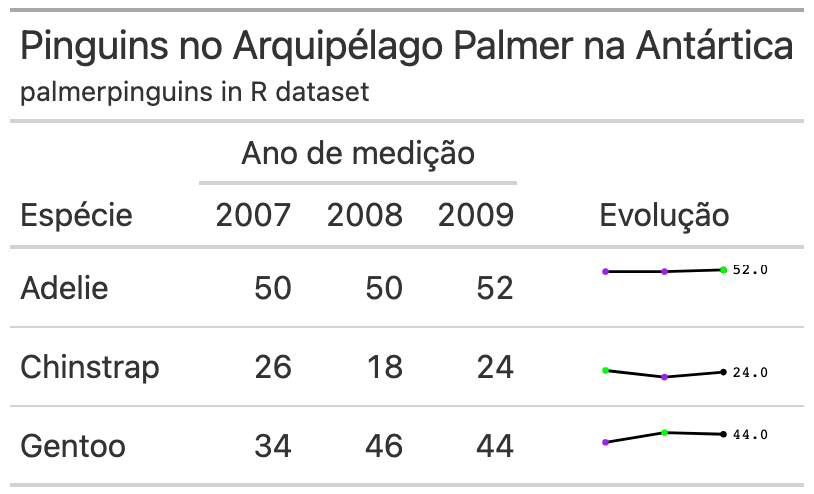
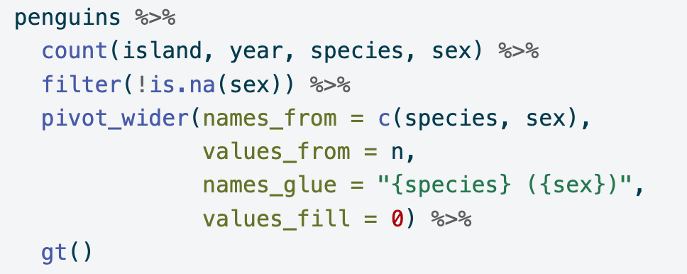
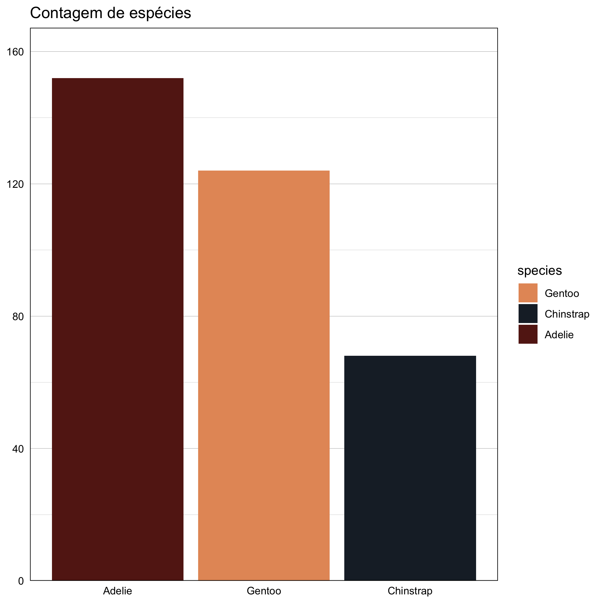
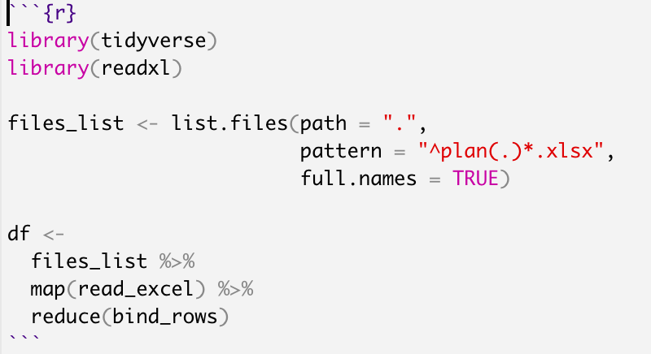
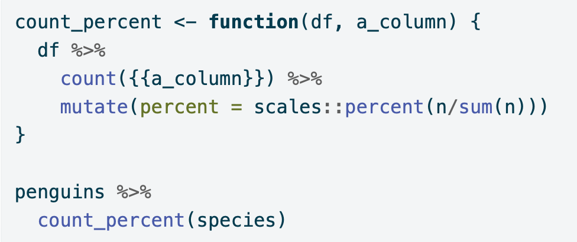

Esta técnica ajuda a visualizar a expectativa para término do trabalho.
Valor e urgência são dois componentes importantes para priorização de projetos. O entendimento destes conceitos pode mostrar que as melhores decisões nem sempre são fáceis de perceber. E muito mais difíceis de negociar.

Dumbbell plots are good to compaire different values of a measurement, showing difference. Similar to dodged bar charts, but much better

Uso do pacote gtExtrsa para formatar tabelas
Uso do pacote gt para formatar tabelas

pivot_wider com mais de uma coluna
How to estimate the number of bugs in a software deploy
Lookahead concept in the Last Planner System

Rstat - uso do ggplot2 com paletas de cores customizadas para variáveis discretas e contínuas nas estéticas colour e fill.

First post in my new Quarto blog
Estimadores estatísticos
Uma descrição de quais são os fatores que constituem o indicador de intenção de mudança.

Rstat - Counting percentual function with curly-curly